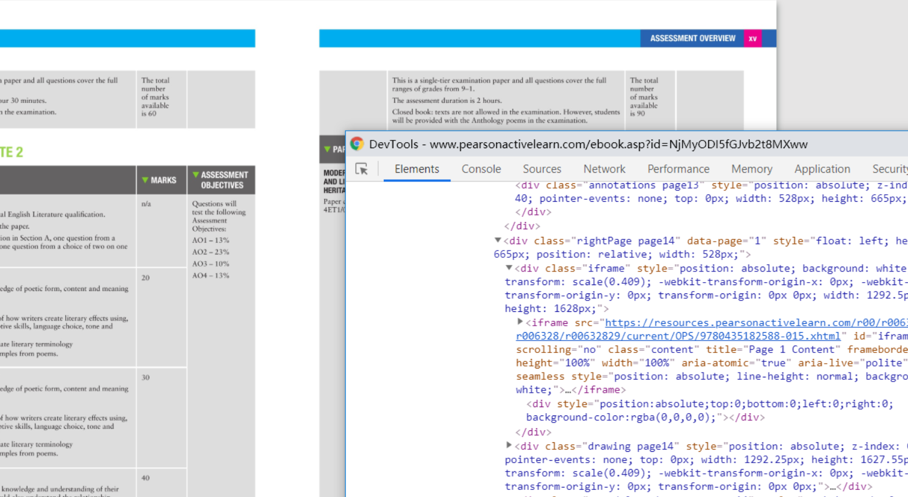
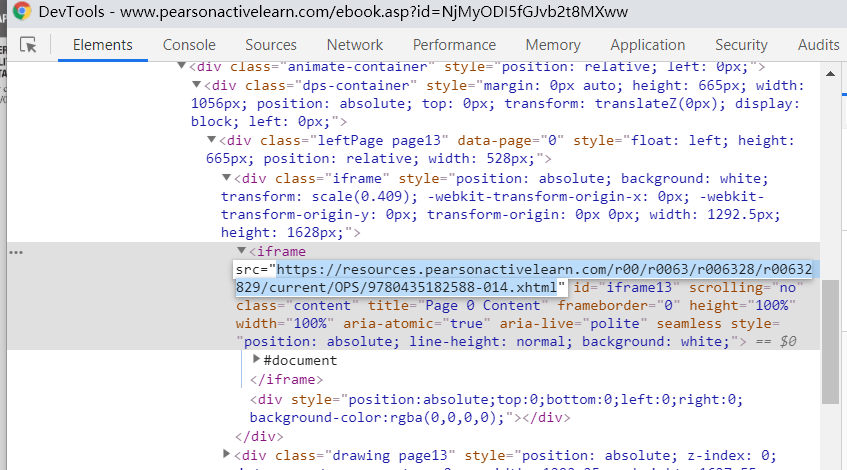
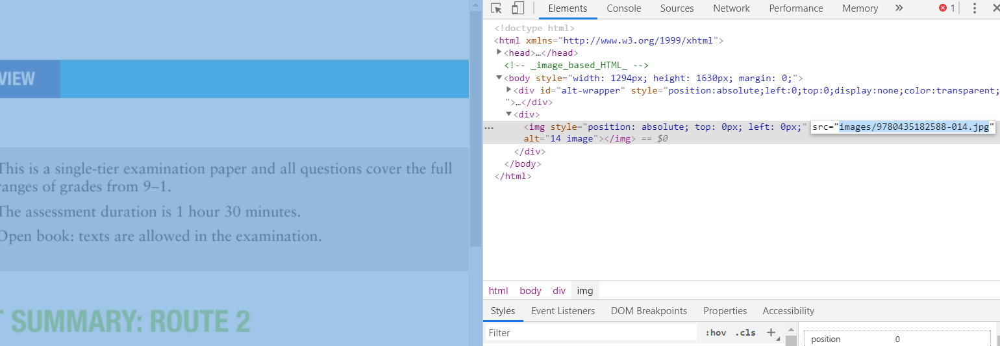
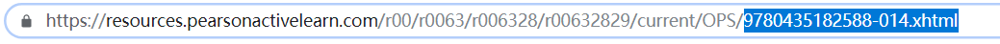
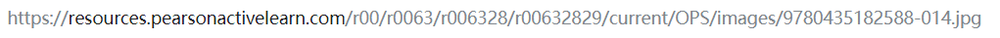

如何获取图片真实地址（Chrome浏览器）
1、在网页中打开电子书，按F12打开开发者工具，按Ctrl + Shift + C 选中页面中的一幅图

2、在源代码中找到最近的iframe标签，把src里面的内容复制出来，在浏览器打开

3、重复刚才的动作，在源代码中找到img标签，把src里面的内容复制出来

4、把浏览器地址栏中最后一个/后面的部分替换为刚才复制的内容

5、回车进入，如果得到一张图片，恭喜你成功得到图片地址，用于程序中使用
